Атлас мест · ролик от 25 сентября 2026
ИЗ РОССИИ В КИТАЙ ЗА 10 МИНУТ | НА АВТОДОМЕ С ВЛАДИВОСТОКА В НОВОСИБИРСК 6000км | vanlife #3
Места из этого ролика — 20
- Кафе у Коляна — с 0:10, Биробиджан ▶
- Благовещенск — с 2:14, Благовещенск ▶
- Фитнес-центр (сауна, хамам) — с 4:31, Благовещенск ▶
- Кафе "В своем Дао" — с 6:04, Владивосток ▶
- Набережная Благовещенска — с 10:19, Благовещенск ▶
- Поющий фонтан — с 12:56, Благовещенск ▶
- Ресторан Берега — с 12:56, Благовещенск ▶
- Городской парк (набережная) — с 13:26, Хейхе ▶
- Таможенный терминал №2 — с 13:56, Благовещенск ▶
- Паром до Хейхе — с 14:26, Хейхе ▶
- Отель в Хейхе — с 17:43, Хейхе ▶
- Отель Лаванда — с 22:22, Китай ▶
- Кафе с самой вкусной пекинской уткой — с 27:05, Хэйхэ ▶
- Ночной рынок еды — с 35:50, Китай ▶
- Ночной рынок, Хэйхэ — с 35:50, Хэйхэ ▶
- Макашница (ларёк) — с 36:22, Китай ▶
- Хуафу (торговый центр) — с 43:39, Китай ▶
- улица туристическая — с 52:43, Китай ▶
- рынок морепродуктов — с 58:25, Китай ▶
- массажный салон — с 1:05:04, Китай ▶
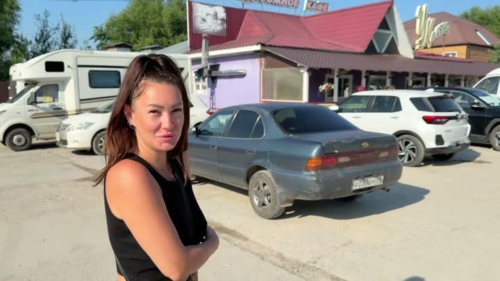
Кафе у Колянакафе · 👍 Советуем · средне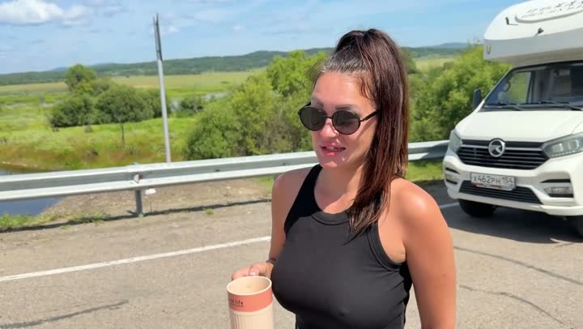
Благовещенскгорода и районы · 🤔 На любителя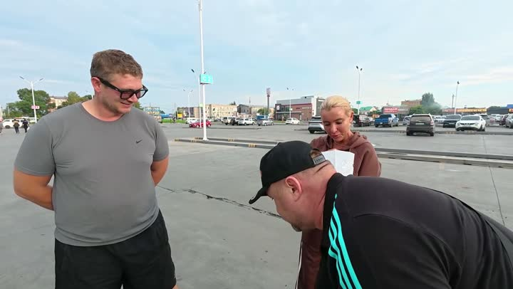
Фитнес-центр (сауна, хамам)спорт · 👍 Советуем Кафе "В своем Дао"кафе · 👍 Советуем
Кафе "В своем Дао"кафе · 👍 Советуем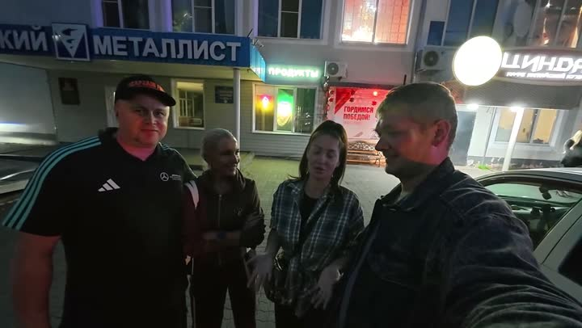
Набережная Благовещенскасмотровая · 👍 Советуем Поющий фонтанпарк развлечений · 👍 Советуем
Поющий фонтанпарк развлечений · 👍 Советуем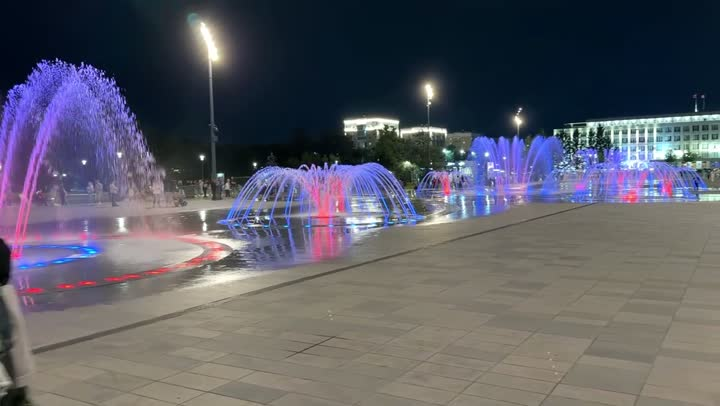
Ресторан Берегаресторан · 🤔 На любителя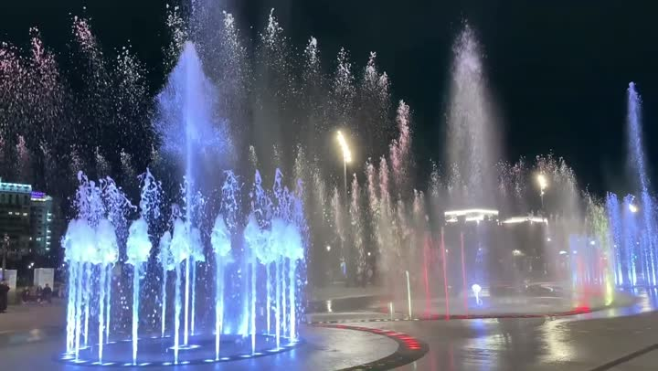
Городской парк (набережная)парк и сад · 👍 Советуем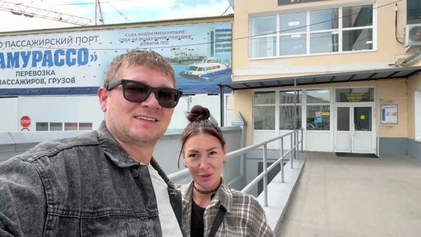
Таможенный терминал №2аэропорт · 🤔 На любителя Паром до Хейхепирс и паром · 👍 Советуем
Паром до Хейхепирс и паром · 👍 Советуем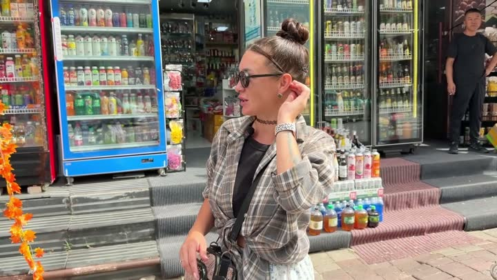
Отель в Хейхеотель · 👍 Советуем · дёшево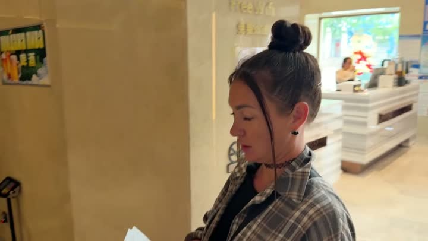
Отель Лавандаотель · 👍 СоветуемКафе с самой вкусной пекинской уткойкафе · 👍 Советуем Ночной рынок едыночной рынок · 🤔 На любителя
Ночной рынок едыночной рынок · 🤔 На любителя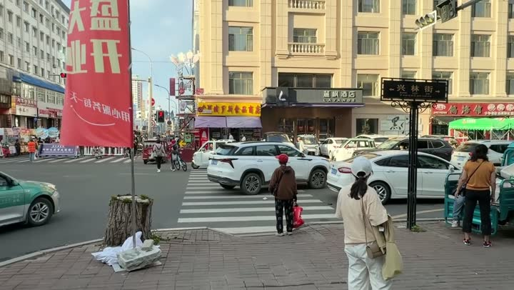
Ночной рынок, Хэйхэночной рынок · 🤔 На любителя · дёшево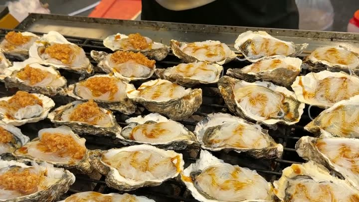
Макашница (ларёк)уличная еда · 🤔 На любителя · дёшево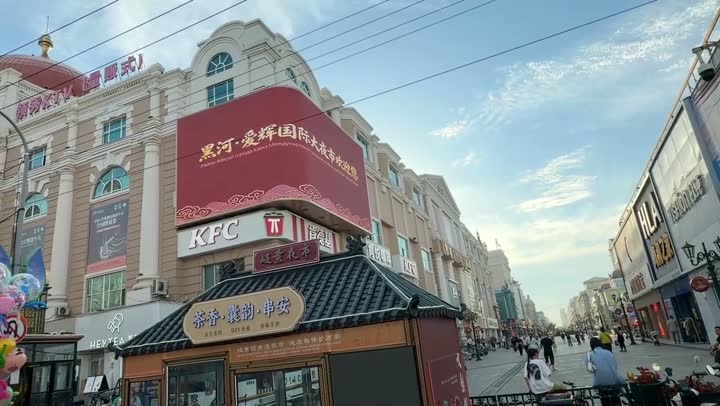
Хуафу (торговый центр)торговый центр · 👍 Советуем · дёшево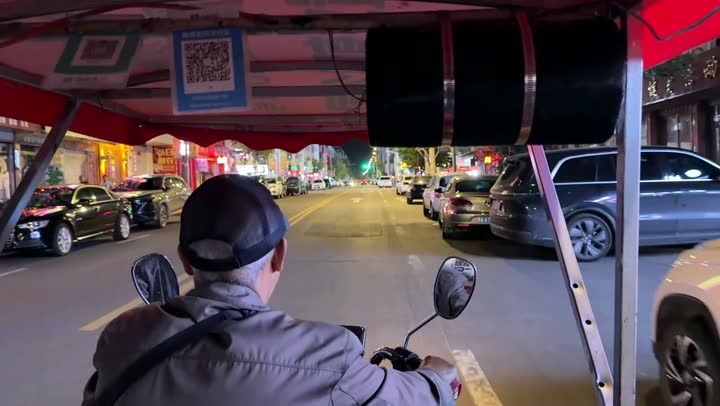
улица туристическаядостопримечательность · 🤔 На любителя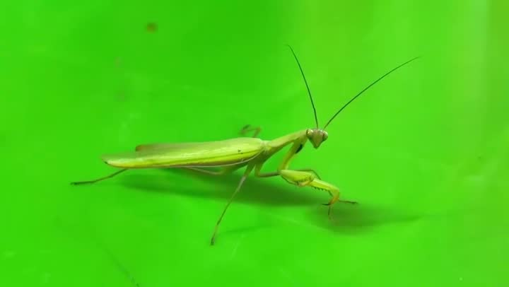
рынок морепродуктоврынок · 👍 Советуем · дёшево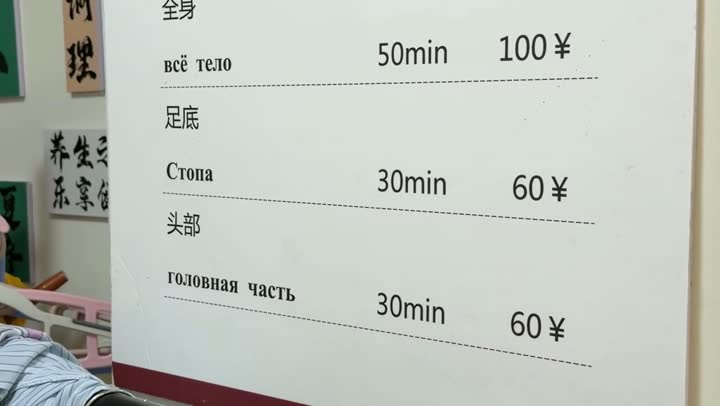
массажный салонмассаж · 🤔 На любителя · дёшевоКак открыть файл в Google или Яндекс Картах
Google: откройте Google Мои карты → «Создать карту» → «Импорт» → выберите скачанный файл. Карта появится в приложении Google Карты: «Сохранённое» → «Карты».
Яндекс: откройте Конструктор карт → «Импорт» → выберите файл → «Сохранить». Карта откроется в Яндекс Картах на телефоне.
Атлас мест канала «Юля и Дима / БЕЗ ТОРМОЗОВ». Описания составлены по нашим роликам; цены — на момент съёмки. Нашли неточность — напишите нам в Telegram.